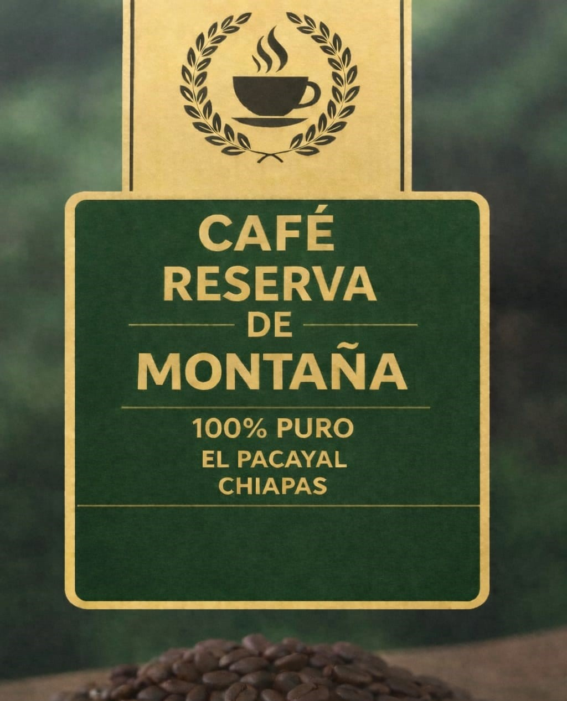
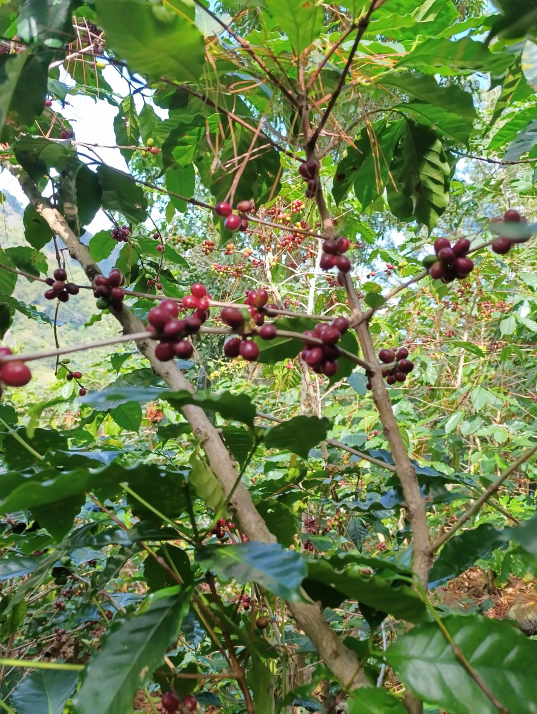
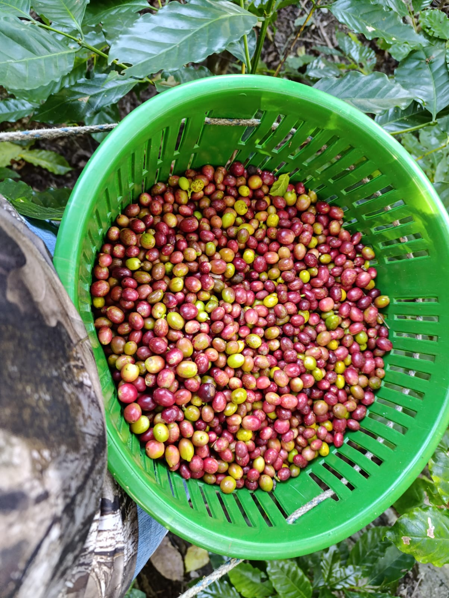
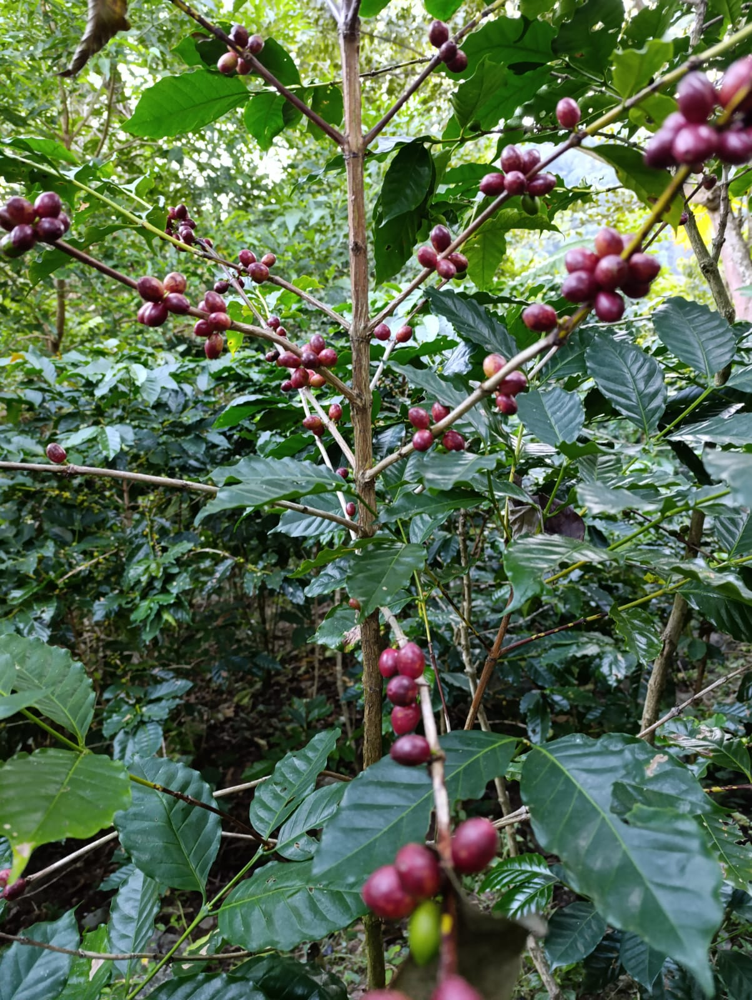
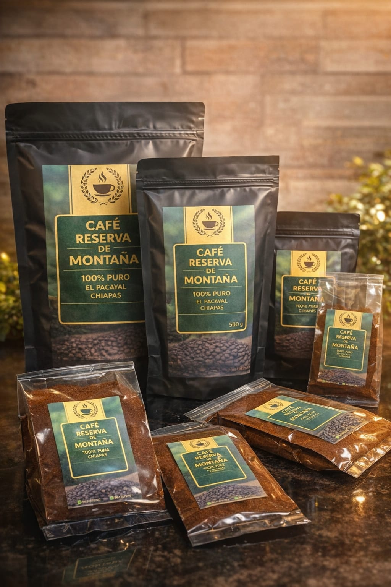
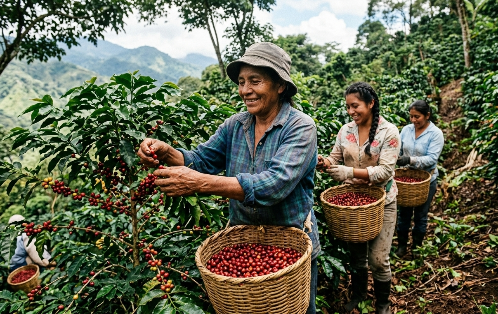

El Secreto de las Alturas: Café Reserva de la Montaña
En el corazón de Pacayal, Chiapas, nace un café que desafía la gravedad. Cultivado a una impresionante altura de 1,650 metros sobre el nivel del mar, nuestra Reserva de la Montaña aprovecha el clima fresco y la humedad constante de las nubes para permitir que el grano madure lentamente.
¿Por qué es el mejor?
A esta altitud, el café desarrolla una densidad única y una complejidad de sabores que no encontrarás en zonas bajas. El resultado es una taza excepcionalmente equilibrada, con notas dulces y una acidez brillante que solo el suelo volcánico y el aire puro de Chiapas pueden ofrecer.
No es solo café, es la esencia de la montaña en cada sorbo.
En Café Reserva de la Montaña cultivamos más que café: cultivamos historia, comunidad y tradición. Cada grano representa el esfuerzo de familias productoras de Chiapas.





Cultivo tradicional sin procesos industriales.
Sabor auténtico de Chiapas.
Apoyas directamente a productores locales.

Cada taza de Café Reserva de la Montaña apoya directamente a familias productoras.
Tu elección mejora sus ingresos y ayuda a preservar una tradición cafetalera única.
No es solo café, es impacto real en comunidades de Chiapas.
Quiero apoyarForma parte de esta historia desde el primer sorbo, habla con nosotros